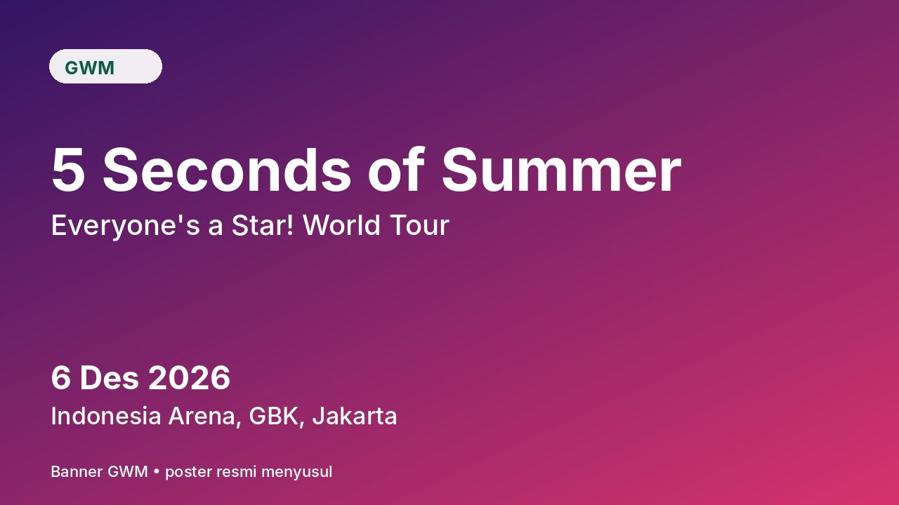

Konser · Pop rock
5 Seconds of Summer – Everyone's a Star! World Tour
- Tanggal
- 6 Des 2026
- Lokasi
- Indonesia Arena, Kompleks GBK, Jakarta
- Harga
- Cek kategori di situs resmi
- Pengisi acara
- 5 Seconds of Summer
Pertunjukan tambahan 5 Seconds of Summer (Everyone's a Star! World Tour) di Indonesia Arena GBK, 6 Desember 2026, setelah tiket show pertama habis dalam waktu singkat.
Buka di GoWithDME Beli tiket / info resmi
Pertanyaan umum
Kapan 5 Seconds of Summer – Everyone's a Star! World Tour digelar?
5 Seconds of Summer – Everyone's a Star! World Tour digelar pada Minggu, 6 Des 2026.
Di mana 5 Seconds of Summer – Everyone's a Star! World Tour digelar?
Lokasinya di Indonesia Arena, Kompleks GBK, Jakarta.
Berapa harga tiket 5 Seconds of Summer – Everyone's a Star! World Tour?
Harga tiket: Cek kategori di situs resmi.
Event mendatang yang mungkin kamu suka
- Rony Parulian Showcase: Dunia dan Seisinya 24 Nov 2026 · Jakarta
- Electronic Worship Movement 24 Nov 2026 · Jakarta
- Nyanyi Bareng Jakarta – Bareng-Bareng Menjaga Kewarasan 24 Nov 2026 · Jakarta
- Trico – Giacometti Jakarta Showcase 26 Nov 2026 · Jakarta
Cek ulang jadwal dan harga di kanal resmi penyelenggara sebelum membeli tiket.